Loiras
Iluminação precisa e tom sob medida, do bege sofisticado ao loiro solar, sem abrir mão da saúde do fio.
ESPECIALISTA EM LOIRAS · SÃO PAULO
Antes de qualquer coloração, um diagnóstico individual define o tom, o tempo de processo e os cuidados necessários. Você sai com o loiro combinado e os fios tão saudáveis quanto entraram.
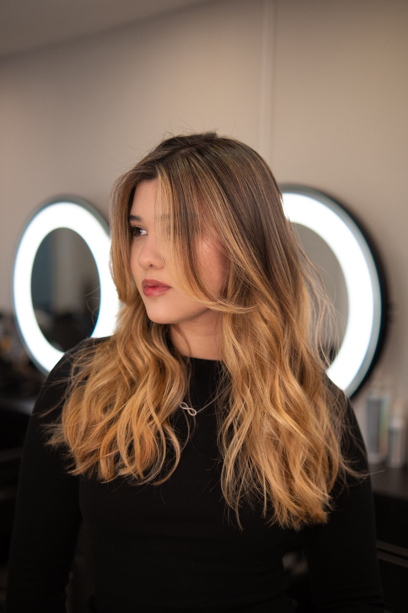
DIAGNÓSTICO ANTES DA TÉCNICA
Histórico químico, espessura, porosidade e o tom que você já teve: é esse exame que define até onde a cor pode ir sem comprometer a estrutura do fio, antes de qualquer produto ser aberto.
ESPECIALIDADES
Iluminação precisa e tom sob medida, do bege sofisticado ao loiro solar, sem abrir mão da saúde do fio.
Pontos de luz estratégicos que trazem profundidade e movimento, com resultado natural no dia a dia.
Cobres autorais, calculados para harmonizar com o tom da sua pele e a sua personalidade.
Corte que respeita o cacho natural, com forma e definição sem tirar o volume dos fios.
Linhas desenhadas para o formato do seu rosto e para funcionar na sua rotina, não só no dia da foto.
TRANSFORMAÇÕES REAIS
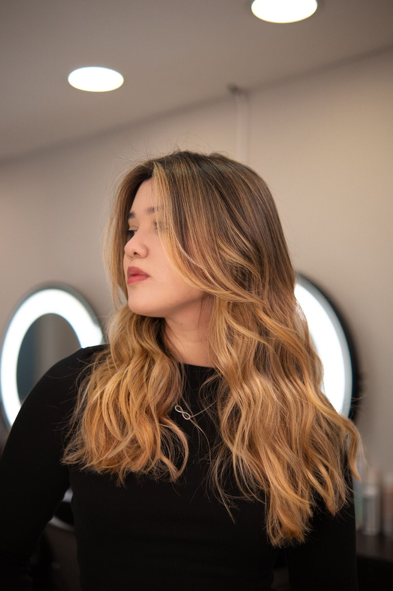
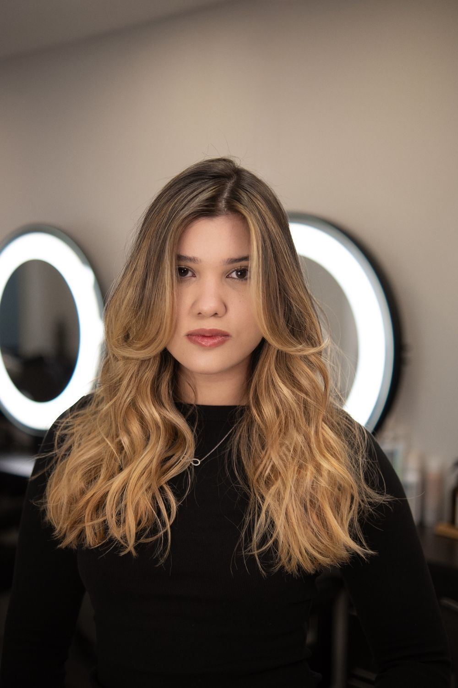
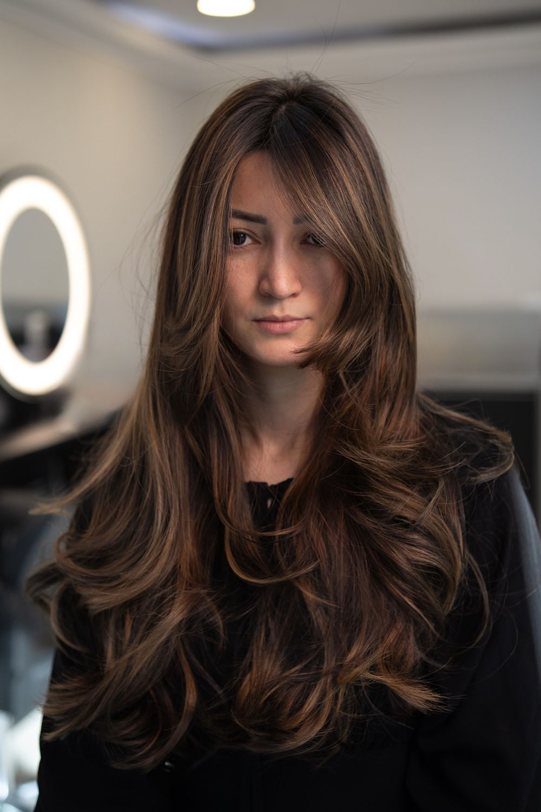
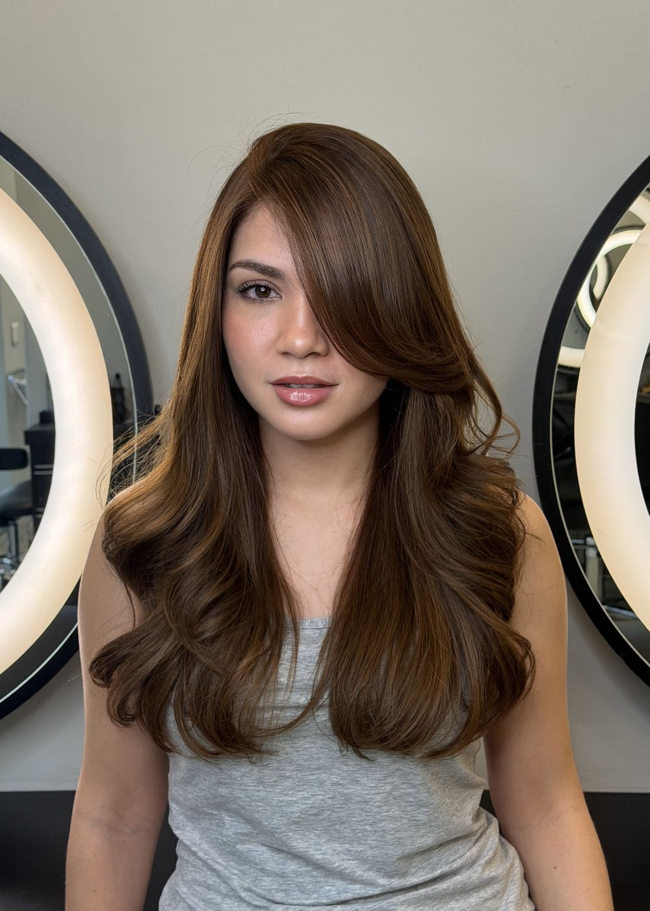
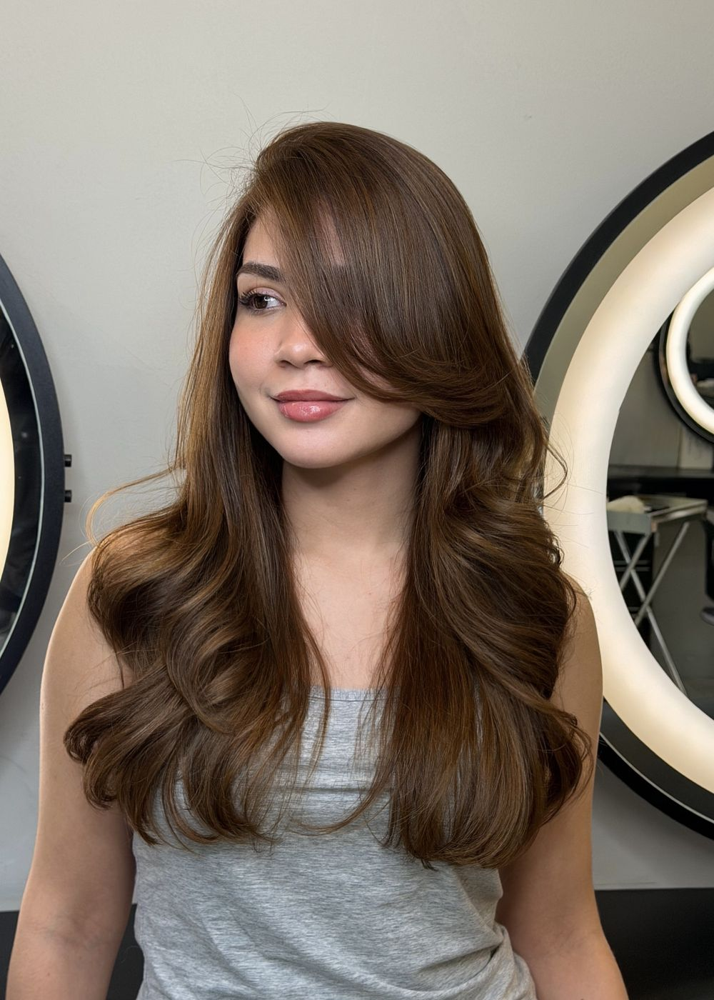
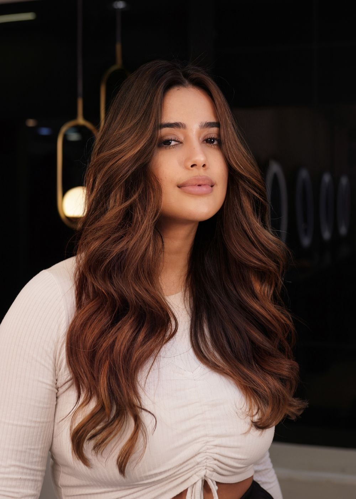
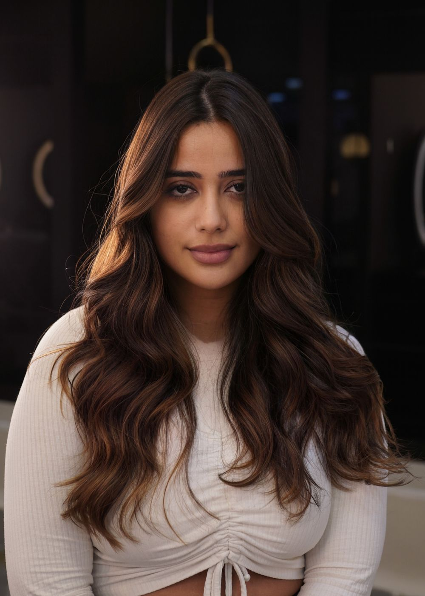
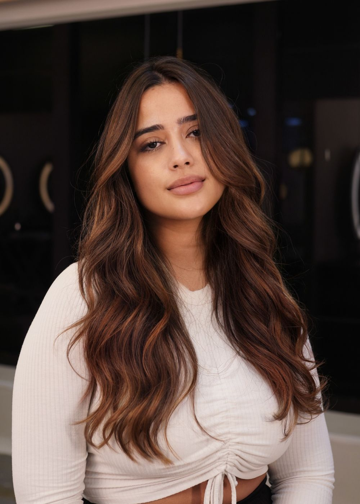
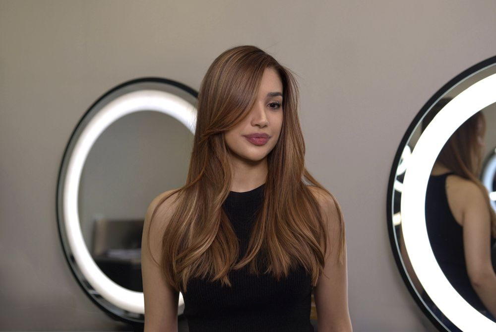
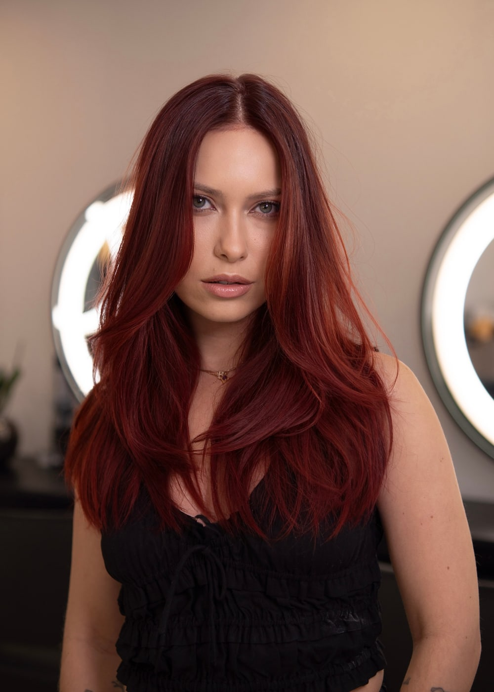
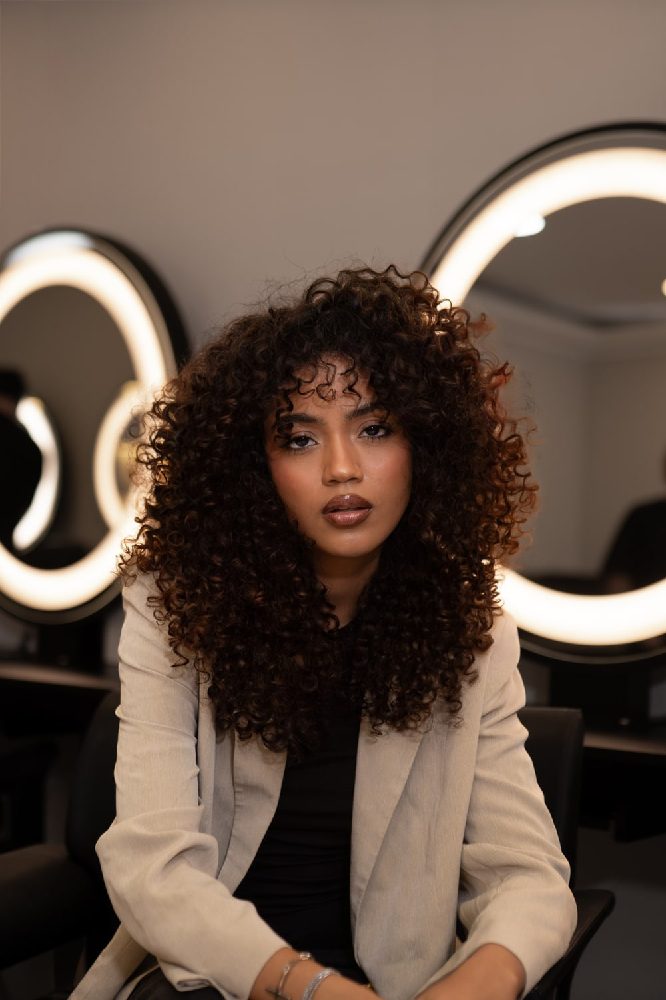
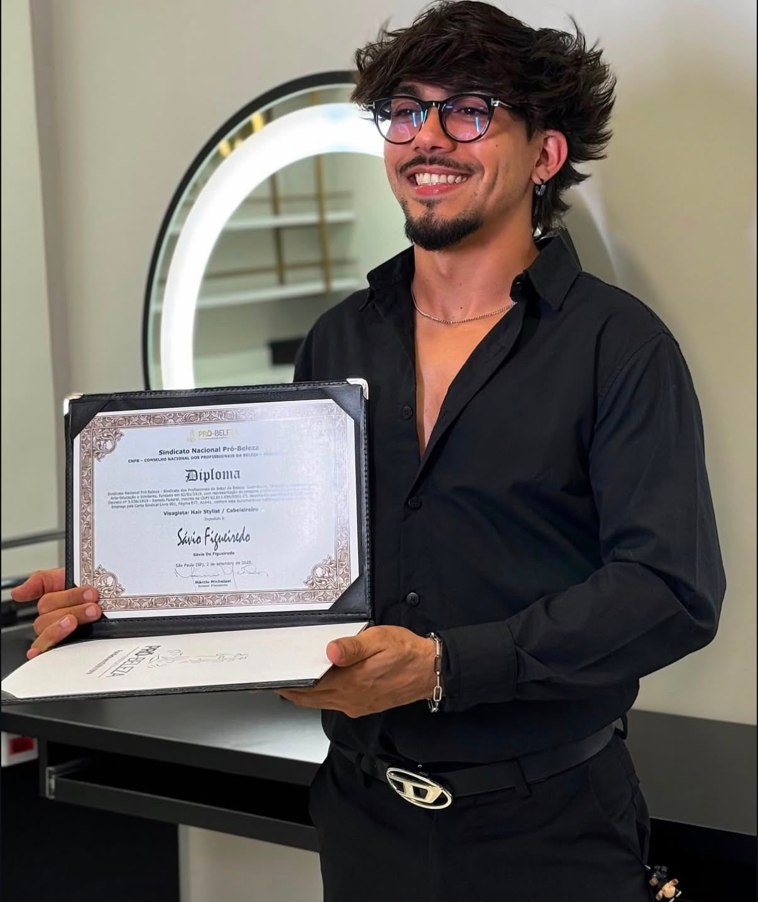
SÁVIO FIGUEIREDO
Especialista em transformações capilares premium, Sávio combina técnica, escuta e sensibilidade estética para criar cabelos com identidade.
Em cada atendimento, um diagnóstico detalhado orienta a cor e o tratamento indicados, e preserva a integridade dos fios. O resultado continua bonito muito depois de sair do salão.
PARCEIRO OFICIAL
Produtos profissionais de alta performance e protocolos individualizados que protegem a fibra em cada etapa da transformação.
A EXPERIÊNCIA
Entendemos seus desejos, rotina, histórico e referências.
Avaliamos estrutura, saúde, tom e possibilidades reais para os fios.
Executamos um plano personalizado com técnica e precisão.
Você recebe orientação para manter cor, forma e saúde em casa.
EXCELÊNCIA RECONHECIDA
POR 44 CLIENTES NO GOOGLE
DÚVIDAS FREQUENTES
É para isso que existe a conversa inicial e o diagnóstico: alinhamos suas referências, avaliamos o que é tecnicamente possível para o seu fio e só seguimos para a coloração quando o resultado esperado está claro para nós dois.
Conversamos sobre seu objetivo e avaliamos histórico, saúde e estrutura dos fios. A partir disso, definimos técnica, tempo e investimento com transparência.
Depende do ponto de partida e do resultado desejado. Transformações de cor costumam exigir algumas horas. O tempo exato é informado após a avaliação.
O orçamento é personalizado, pois considera comprimento, volume, histórico e técnica indicada. Envie fotos atuais pelo WhatsApp para uma primeira orientação.
No Spettacolo Salone, Rua Coronel Diogo, 364, Aclimação, São Paulo — SP.
SEU NOVO CABELO COMEÇA AQUI
Conte o que você deseja e envie fotos atuais do seu cabelo. O atendimento começa antes mesmo de você chegar ao salão.
Agendar pelo WhatsApp ↗ATENDIMENTO COM HORA MARCADARua Coronel Diogo, 364
Aclimação · São Paulo — SP
CEP 01545-000
Terça a sábado · 09:00–19:00
Domingo e segunda · Fechado